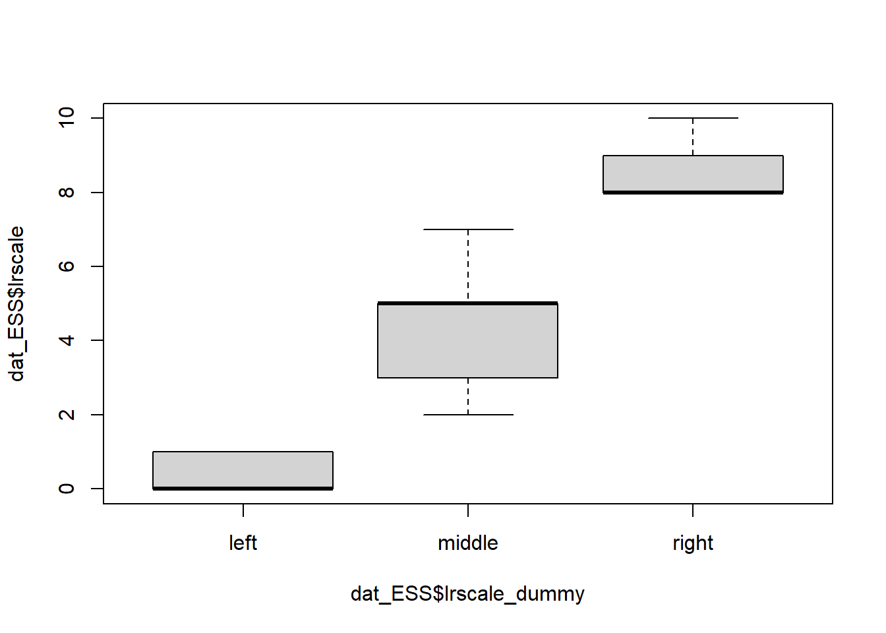
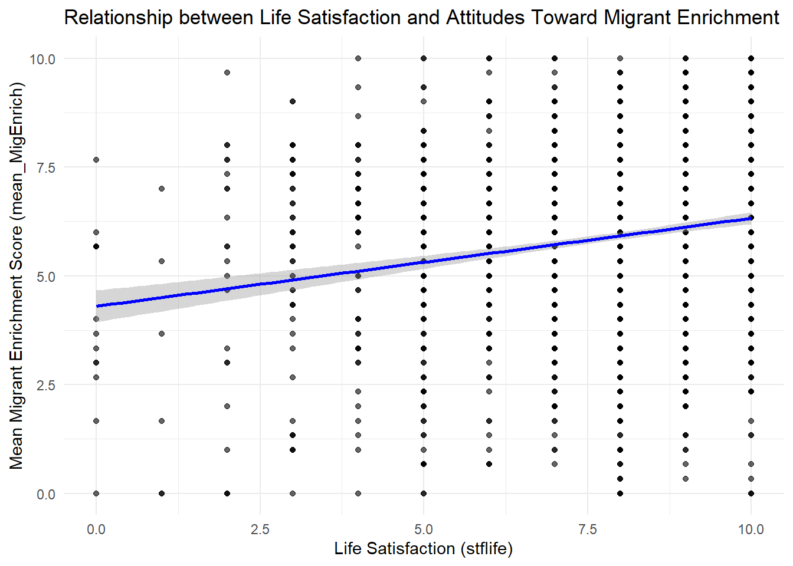
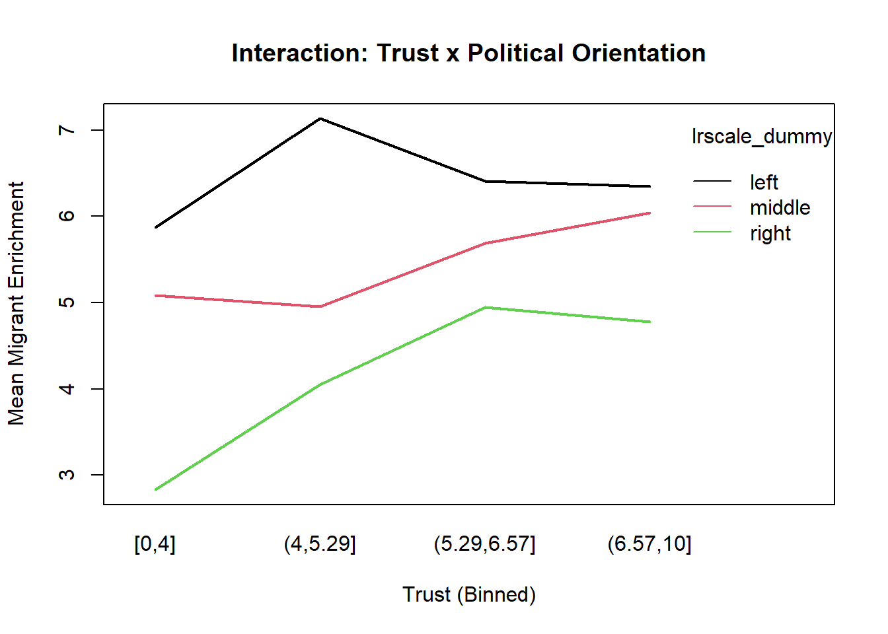
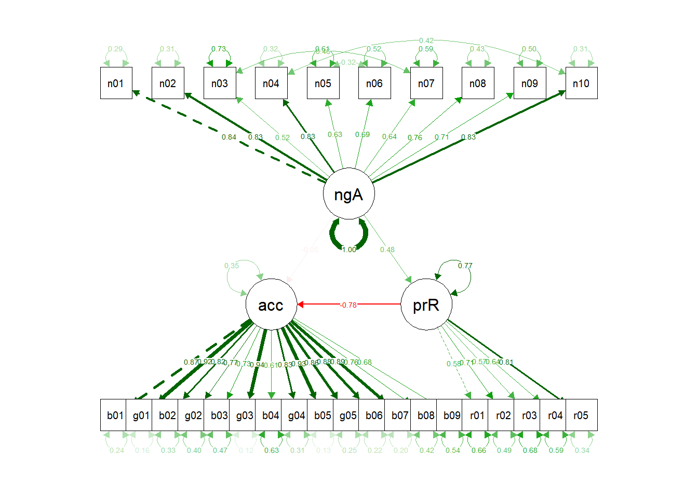

# none global variables definedRegression and Mediation Analysis
Background Information
This is an R Markdown document. Instructions for writing these documents and background information can be found in the book written by Xie, Allaire, and Grolemund (2018) When you execute code within the document, the results appear beneath the code. This is an R Markdown document. Instructions for writing these documents and background information can be found in the book written by Xie, Allaire, and Grolemund (2018) When you execute code within the document, the results appear beneath the code. This file contains summary statistics, respectively the analysis step (confirmatory and exploratory analyses). Files are split into multiple subfiles like data processing and data analyses steps, which follows the classical data-analysis pipeline (see Peng and Matsui 2016; Wickham and Grolemund 2017).
Global Variables
get packages, raw data, functions
### install and load packages
# if packages are not already installed, the function will install and activate them
usePackage <- function(p) {
if (!is.element(p, installed.packages()[,1]))
install.packages(p, dep = TRUE, repos = "http://cran.us.r-project.org")
require(p, character.only = TRUE)
}
usePackage("tidyverse")
usePackage("dplyr")
usePackage("readxl") # read .xlsx file
usePackage("haven") # read, import SPSS files
usePackage("stargazer")
usePackage("semPlot")
usePackage("lavaan") # ggplot2 will be loaded
### load data files
## change working directory
setwd("data")
## load data
dat_Fenn2023 <- readxl::read_excel(path = "questionnaire.xlsx", sheet = 1)
dat_ESS <- readRDS(file = "dat_SPSS_subset.rds")
### load functions
# print(getwd())
setwd("../functions")
for(i in 1:length(dir())){
# print(dir()[i])
source(dir()[i], encoding = "utf-8")
}
rm(i)Regression Analysis
table(dat_ESS$lrscale_dummy)
left middle right
145 1827 112 boxplot(dat_ESS$lrscale ~ dat_ESS$lrscale_dummy)
# Correlation test and report
cor_result <- cor.test(dat_ESS$stflife, dat_ESS$mean_MigEnrich, use = "complete")
report::report(cor_result)Effect sizes were labelled following Funder's (2019) recommendations.
The Pearson's product-moment correlation between dat_ESS$stflife and
dat_ESS$mean_MigEnrich is positive, statistically significant, and small (r =
0.19, 95% CI [0.15, 0.23], t(2082) = 8.68, p < .001)# Improved ggplot with regression line
ggplot(dat_ESS, aes(x = stflife, y = mean_MigEnrich)) +
geom_point(alpha = 0.6) +
geom_smooth(method = "lm", se = TRUE, color = "blue") +
labs(
title = "Relationship between Life Satisfaction and Attitudes Toward Migrant Enrichment",
x = "Life Satisfaction (stflife)",
y = "Mean Migrant Enrichment Score (mean_MigEnrich)"
) +
theme_minimal()`geom_smooth()` using formula = 'y ~ x'
# Get unique groups
groups <- unique(dat_ESS$lrscale_dummy)
# Loop through each group and compute correlation
for (g in groups) {
cat("Group:", g, "\n")
# Subset the data
sub_data <- subset(dat_ESS, lrscale_dummy == g)
# Run correlation test
result <- cor.test(sub_data$stflife, sub_data$mean_MigEnrich, use = "complete.obs")
# Print correlation estimate and p-value
print(result)
cat("\n")
}Group: middle
Pearson's product-moment correlation
data: sub_data$stflife and sub_data$mean_MigEnrich
t = 9.131, df = 1825, p-value < 2.2e-16
alternative hypothesis: true correlation is not equal to 0
95 percent confidence interval:
0.1647388 0.2524591
sample estimates:
cor
0.2090194
Group: left
Pearson's product-moment correlation
data: sub_data$stflife and sub_data$mean_MigEnrich
t = 1.1345, df = 143, p-value = 0.2585
alternative hypothesis: true correlation is not equal to 0
95 percent confidence interval:
-0.06963453 0.25355239
sample estimates:
cor
0.09444677
Group: right
Pearson's product-moment correlation
data: sub_data$stflife and sub_data$mean_MigEnrich
t = 2.0541, df = 110, p-value = 0.04233
alternative hypothesis: true correlation is not equal to 0
95 percent confidence interval:
0.006892084 0.364749340
sample estimates:
cor
0.1922021 dat_upper <- dat_ESS %>%
filter(dat_ESS$lrscale_dummy == "right")
dim(dat_upper)[1] 112 22dat_lower <- dat_ESS %>%
filter(dat_ESS$lrscale_dummy == "left")
dim(dat_lower)[1] 145 22lm_lower <- lm(formula = mean_MigEnrich ~ mean_Trust + stflife + gndr + rlgdgr, data = dat_lower)
lm_upper <- lm(formula = mean_MigEnrich ~ mean_Trust + stflife + gndr + rlgdgr, data = dat_upper)
summary(lm_lower)
Call:
lm(formula = mean_MigEnrich ~ mean_Trust + stflife + gndr + rlgdgr,
data = dat_lower)
Residuals:
Min 1Q Median 3Q Max
-5.4458 -1.0422 0.0612 1.1126 4.1514
Coefficients:
Estimate Std. Error t value Pr(>|t|)
(Intercept) 4.57431 0.61543 7.433 9.62e-12 ***
mean_Trust 0.37137 0.08184 4.538 1.21e-05 ***
stflife 0.01716 0.06897 0.249 0.804
gndrFemale -0.44951 0.32355 -1.389 0.167
rlgdgr 0.02259 0.05097 0.443 0.658
---
Signif. codes: 0 '***' 0.001 '**' 0.01 '*' 0.05 '.' 0.1 ' ' 1
Residual standard error: 1.869 on 140 degrees of freedom
Multiple R-squared: 0.1377, Adjusted R-squared: 0.113
F-statistic: 5.587 on 4 and 140 DF, p-value: 0.0003345summary(lm_upper)
Call:
lm(formula = mean_MigEnrich ~ mean_Trust + stflife + gndr + rlgdgr,
data = dat_upper)
Residuals:
Min 1Q Median 3Q Max
-4.8197 -1.5296 0.2095 1.4307 7.3650
Coefficients:
Estimate Std. Error t value Pr(>|t|)
(Intercept) 0.392763 1.032922 0.380 0.7045
mean_Trust 0.558500 0.114933 4.859 4.05e-06 ***
stflife 0.172724 0.116068 1.488 0.1397
gndrFemale 0.773584 0.451318 1.714 0.0894 .
rlgdgr -0.009282 0.073557 -0.126 0.8998
---
Signif. codes: 0 '***' 0.001 '**' 0.01 '*' 0.05 '.' 0.1 ' ' 1
Residual standard error: 2.215 on 107 degrees of freedom
Multiple R-squared: 0.2491, Adjusted R-squared: 0.2211
F-statistic: 8.876 on 4 and 107 DF, p-value: 3.153e-06Again we can use the stargazer package, which identifies lm_upper for example as an lm-object in R and creates a wonderful table for the model results:
setwd("outputs")
stargazer(lm_lower, type = "html", out = "lm_lower.html")| Dependent variable: | |
| mean_MigEnrich | |
| mean_Trust | 0.371*** |
| (0.082) | |
| stflife | 0.017 |
| (0.069) | |
| gndrFemale | -0.450 |
| (0.324) | |
| rlgdgr | 0.023 |
| (0.051) | |
| Constant | 4.574*** |
| (0.615) | |
| Observations | 145 |
| R2 | 0.138 |
| Adjusted R2 | 0.113 |
| Residual Std. Error | 1.869 (df = 140) |
| F Statistic | 5.587*** (df = 4; 140) |
| Note: | p<0.1; p<0.05; p<0.01 |
stargazer(lm_upper, type = "html", out = "lm_upper.html")| Dependent variable: | |
| mean_MigEnrich | |
| mean_Trust | 0.558*** |
| (0.115) | |
| stflife | 0.173 |
| (0.116) | |
| gndrFemale | 0.774* |
| (0.451) | |
| rlgdgr | -0.009 |
| (0.074) | |
| Constant | 0.393 |
| (1.033) | |
| Observations | 112 |
| R2 | 0.249 |
| Adjusted R2 | 0.221 |
| Residual Std. Error | 2.215 (df = 107) |
| F Statistic | 8.876*** (df = 4; 107) |
| Note: | p<0.1; p<0.05; p<0.01 |
# Discretize stflife into bins (e.g., quartiles)
dat_ESS$trust_bin <- cut(dat_ESS$stflife, breaks = quantile(dat_ESS$mean_Trust, probs = seq(0, 1, 0.25), na.rm = TRUE), include.lowest = TRUE)
# Remove missing data
valid_rows <- complete.cases(dat_ESS$trust_bin, dat_ESS$lrscale_dummy, dat_ESS$mean_MigEnrich)
# Make factors
f1 <- dat_ESS$trust_bin[valid_rows]
f2 <- dat_ESS$lrscale_dummy[valid_rows]
y <- dat_ESS$mean_MigEnrich[valid_rows]
# Plot
interaction.plot(f1, f2, y,
col = 1:length(levels(f2)), lty = 1, lwd = 2,
trace.label = "lrscale_dummy",
xlab = "Trust (Binned)",
ylab = "Mean Migrant Enrichment",
main = "Interaction: Trust x Political Orientation")
Mediation Analysis
Manifest
Latent
regEx <- "^acceptability|^RiskBenefit.*r$|^panas.*n$"
tmp_vars <- str_subset(string = colnames(dat_Fenn2023), pattern = regEx)
tmp_dat_mediation <- dat_Fenn2023[,tmp_vars]
a <- str_extract(string = colnames(tmp_dat_mediation), pattern = "[:digit:]+")
b <- str_extract(string = colnames(tmp_dat_mediation), pattern = "(?<=[:digit:]{2}).*")
colnames(tmp_dat_mediation) <- paste0(b,a)
# model_lavaan(vars = paste0(b,a), labelLatentVar = "test")
model <- '
acceptability =~ bi01 + gen01 + bi02 + genr02 + bir03 + gen03 + bir04 + genr04 + bi05 + gen05 + bir06 + bi07 + bir08 + bi09
percRisks =~ r01 + r02 + r03 + r04 + r05
negAffect =~ n01 + n02 + n03 + n04 + n05 + n06 + n07 + n08 + n09 + n10
# adjustments
n03 ~~ n07;
n05 ~~ n06;
n04 ~~ n10;
# direct effect
acceptability ~ c*negAffect
# mediator
percRisks ~ a*negAffect
acceptability ~ b*percRisks
# indirect effect (a*b)
ab := a*b
# total effect
total := c + (a*b)
'
fit <- sem(model, data = tmp_dat_mediation, estimator = "MLR")
summary(fit, standardized = TRUE)lavaan 0.6.17 ended normally after 46 iterations
Estimator ML
Optimization method NLMINB
Number of model parameters 64
Number of observations 579
Model Test User Model:
Standard Scaled
Test Statistic 1316.703 1067.822
Degrees of freedom 371 371
P-value (Chi-square) 0.000 0.000
Scaling correction factor 1.233
Yuan-Bentler correction (Mplus variant)
Parameter Estimates:
Standard errors Sandwich
Information bread Observed
Observed information based on Hessian
Latent Variables:
Estimate Std.Err z-value P(>|z|) Std.lv Std.all
acceptability =~
bi01 1.000 1.082 0.870
gen01 1.014 0.026 38.813 0.000 1.097 0.917
bi02 0.908 0.032 28.060 0.000 0.982 0.818
genr02 0.951 0.048 19.847 0.000 1.029 0.774
bir03 0.899 0.051 17.662 0.000 0.973 0.728
gen03 1.085 0.026 41.795 0.000 1.174 0.940
bir04 0.660 0.049 13.485 0.000 0.714 0.611
genr04 1.035 0.045 22.789 0.000 1.120 0.829
bi05 1.087 0.028 38.294 0.000 1.176 0.935
gen05 0.949 0.033 28.526 0.000 1.027 0.864
bir06 1.089 0.036 30.585 0.000 1.178 0.881
bi07 0.950 0.030 31.461 0.000 1.028 0.893
bir08 0.928 0.049 18.801 0.000 1.004 0.764
bi09 0.718 0.037 19.348 0.000 0.777 0.679
percRisks =~
r01 1.000 0.598 0.579
r02 1.225 0.108 11.355 0.000 0.732 0.714
r03 0.897 0.087 10.288 0.000 0.536 0.567
r04 1.138 0.104 10.969 0.000 0.680 0.643
r05 1.456 0.114 12.817 0.000 0.870 0.812
negAffect =~
n01 1.000 0.900 0.844
n02 0.984 0.037 26.865 0.000 0.885 0.831
n03 0.585 0.058 10.072 0.000 0.526 0.519
n04 1.091 0.051 21.571 0.000 0.982 0.827
n05 0.725 0.053 13.673 0.000 0.652 0.628
n06 0.757 0.052 14.598 0.000 0.681 0.694
n07 0.751 0.058 12.868 0.000 0.676 0.639
n08 0.998 0.058 17.163 0.000 0.898 0.758
n09 0.843 0.053 15.836 0.000 0.758 0.710
n10 1.103 0.053 20.871 0.000 0.992 0.832
Regressions:
Estimate Std.Err z-value P(>|z|) Std.lv Std.all
acceptability ~
negAffect (c) -0.062 0.047 -1.324 0.185 -0.051 -0.051
percRisks ~
negAffect (a) 0.320 0.039 8.189 0.000 0.482 0.482
acceptability ~
percRisks (b) -1.416 0.134 -10.537 0.000 -0.783 -0.783
Covariances:
Estimate Std.Err z-value P(>|z|) Std.lv Std.all
.n03 ~~
.n07 0.326 0.049 6.667 0.000 0.326 0.464
.n05 ~~
.n06 0.182 0.034 5.356 0.000 0.182 0.320
.n04 ~~
.n10 0.188 0.040 4.661 0.000 0.188 0.425
Variances:
Estimate Std.Err z-value P(>|z|) Std.lv Std.all
.bi01 0.376 0.042 9.035 0.000 0.376 0.243
.gen01 0.226 0.034 6.653 0.000 0.226 0.158
.bi02 0.479 0.062 7.730 0.000 0.479 0.332
.genr02 0.709 0.078 9.095 0.000 0.709 0.401
.bir03 0.840 0.092 9.174 0.000 0.840 0.470
.gen03 0.183 0.019 9.403 0.000 0.183 0.117
.bir04 0.855 0.081 10.494 0.000 0.855 0.627
.genr04 0.571 0.088 6.466 0.000 0.571 0.313
.bi05 0.200 0.023 8.520 0.000 0.200 0.126
.gen05 0.360 0.049 7.406 0.000 0.360 0.254
.bir06 0.401 0.054 7.399 0.000 0.401 0.224
.bi07 0.269 0.031 8.562 0.000 0.269 0.203
.bir08 0.717 0.086 8.321 0.000 0.717 0.416
.bi09 0.704 0.053 13.275 0.000 0.704 0.538
.r01 0.707 0.061 11.543 0.000 0.707 0.664
.r02 0.514 0.059 8.703 0.000 0.514 0.490
.r03 0.607 0.066 9.225 0.000 0.607 0.679
.r04 0.657 0.065 10.043 0.000 0.657 0.587
.r05 0.390 0.047 8.273 0.000 0.390 0.340
.n01 0.328 0.031 10.508 0.000 0.328 0.288
.n02 0.351 0.035 10.031 0.000 0.351 0.309
.n03 0.750 0.055 13.515 0.000 0.750 0.730
.n04 0.446 0.046 9.626 0.000 0.446 0.316
.n05 0.652 0.048 13.638 0.000 0.652 0.605
.n06 0.499 0.049 10.121 0.000 0.499 0.518
.n07 0.661 0.056 11.740 0.000 0.661 0.591
.n08 0.596 0.054 11.080 0.000 0.596 0.425
.n09 0.565 0.044 12.951 0.000 0.565 0.496
.n10 0.439 0.044 9.907 0.000 0.439 0.308
.acceptability 0.405 0.047 8.700 0.000 0.346 0.346
.percRisks 0.274 0.045 6.064 0.000 0.768 0.768
negAffect 0.810 0.072 11.311 0.000 1.000 1.000
Defined Parameters:
Estimate Std.Err z-value P(>|z|) Std.lv Std.all
ab -0.453 0.049 -9.305 0.000 -0.377 -0.377
total -0.515 0.054 -9.607 0.000 -0.428 -0.428# fit_bootstrap <- sem(model, data = tmp_dat_mediation, estimator = "ML", se ="bootstrap")
# summary(fit_bootstrap, standardized = TRUE)
semPlot::semPaths(object = fit, what = "std", edge.label.cex = 0.5)
round(fitmeasures(fit,
fit.measures =c("aic", "bic", "logl", "pvalue",
"rmsea", "rmsea.ci.lower", "rmsea.ci.upper",
"srmr", "cfi")), digits = 3) aic bic logl pvalue rmsea
39279.367 39558.490 -19575.683 0.000 0.066
rmsea.ci.lower rmsea.ci.upper srmr cfi
0.062 0.070 0.066 0.933 References
Peng, Roger D., and Elizabeth Matsui. 2016. The Art of Data Science: A Guide for Anyone Who Works with Data. Lulu.com. https://bookdown.org/rdpeng/artofdatascience/.
Wickham, Hadley, and Garrett Grolemund. 2017. R for Data Science: Import, Tidy, Transform, Visualize, and Model Data. "O’Reilly Media, Inc.". https://r4ds.had.co.nz/.
Xie, Yihui, J. J. Allaire, and Garrett Grolemund. 2018. R Markdown: The Definitive Guide. New York: Chapman; Hall/CRC. https://doi.org/10.1201/9781138359444.